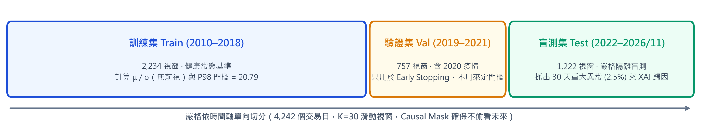
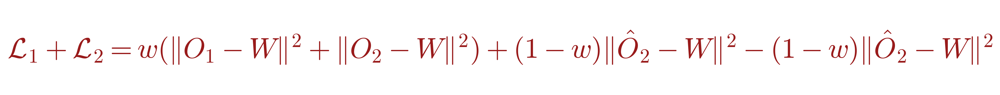
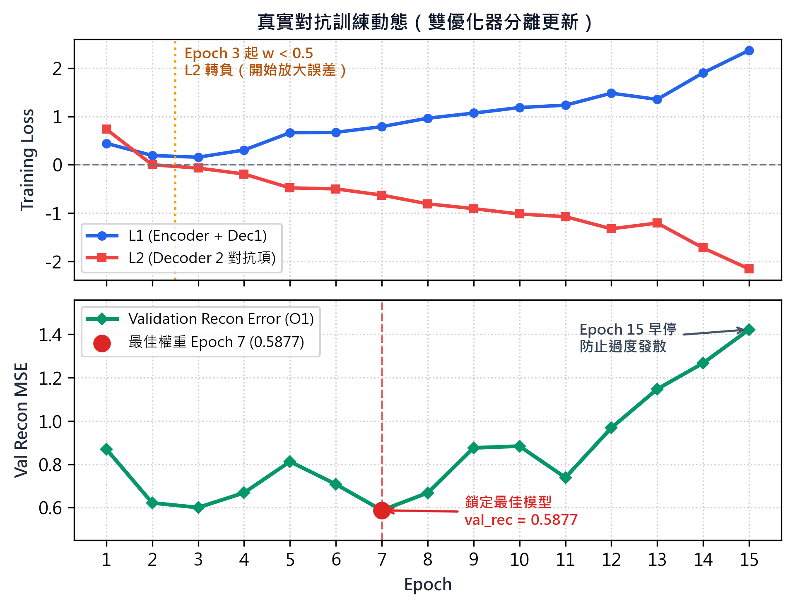
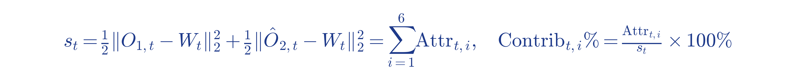
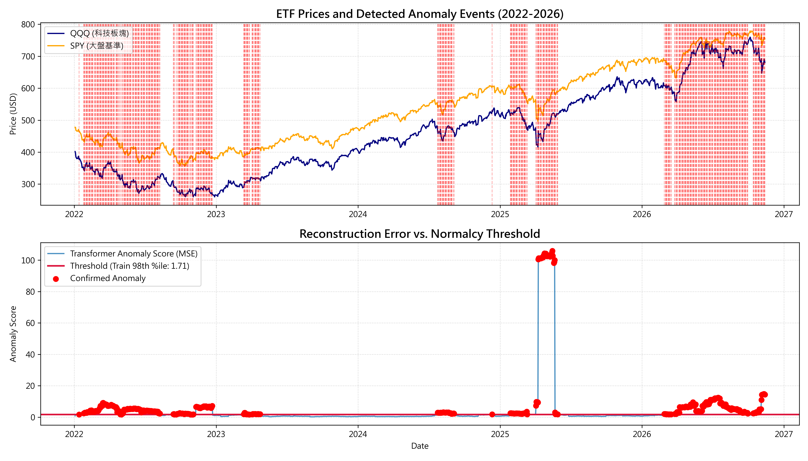
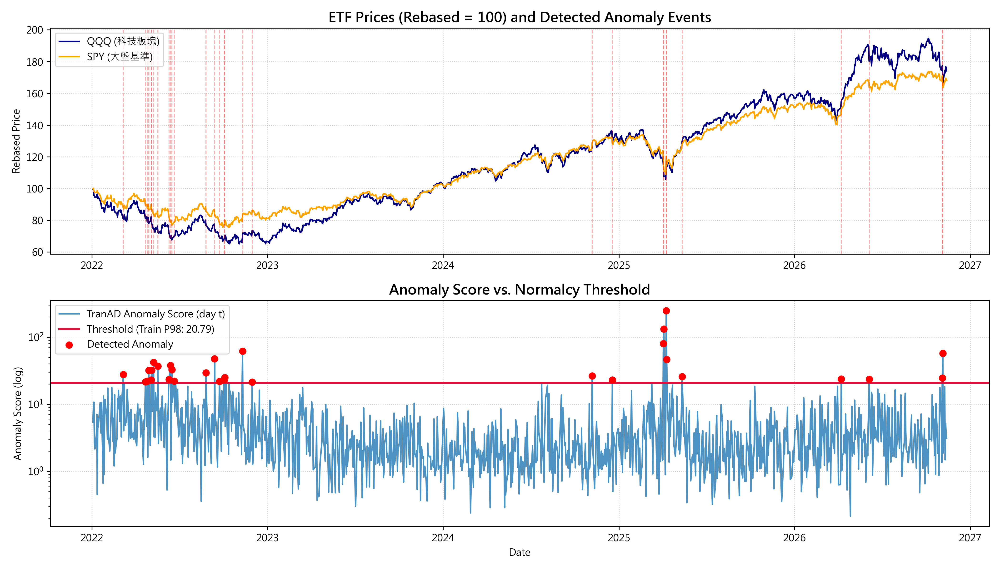
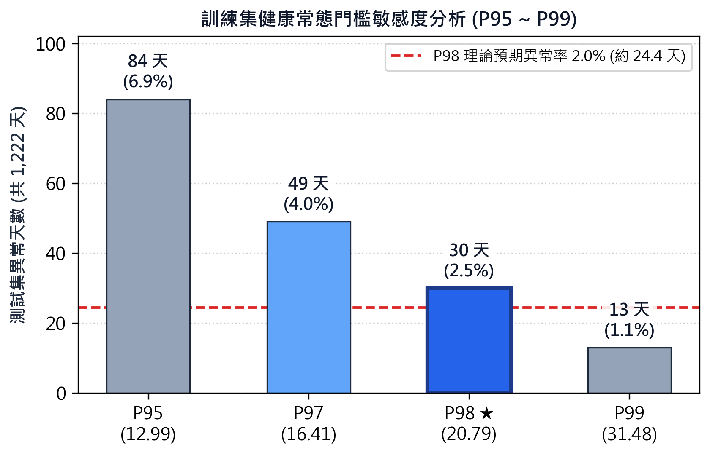
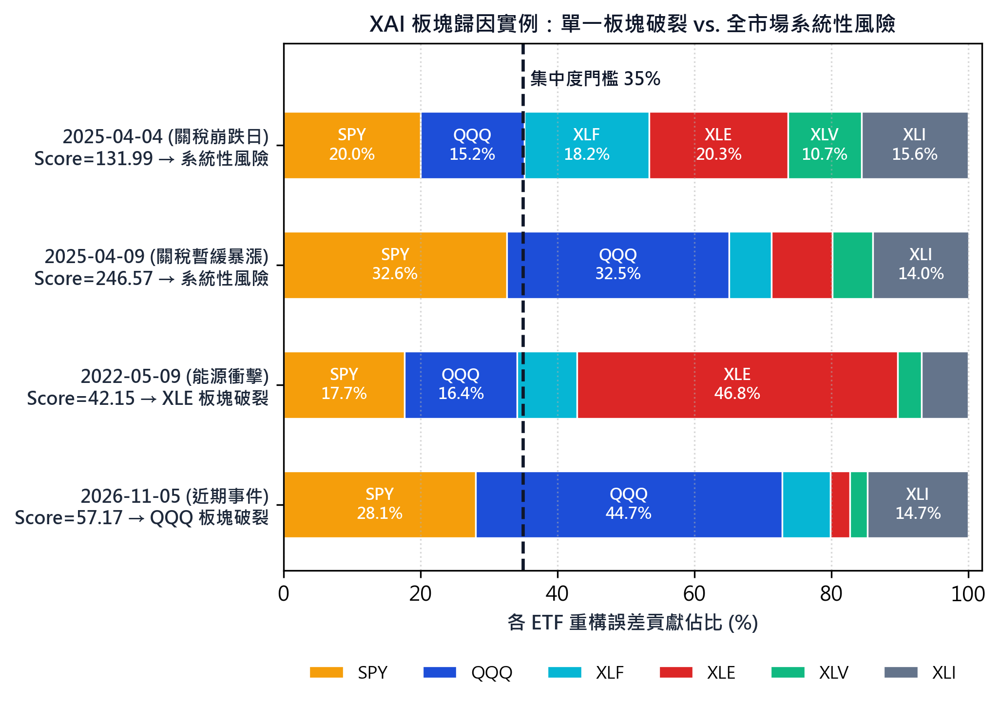

「美股市場異常雷達」— 抓出板塊脫鉤變天訊號、找出出事產業，並剖析背後數學與程式改進
抓出「大盤看似沒事、底下板塊已脫鉤」的結構風險，避免只看單日漲跌幅漏報
亮燈時立刻判斷該「全市場降槓桿避險」還是「只針對單一板塊換倉」
拆解 4 組論文公式並修復抵消 / 拖尾 Bug；盲測異常率 40.0% ➔ 2.5%
firstry/claude改進版.py ｜ 對照文獻：Tuli et al., TranAD (VLDB 2022) ｜ 資料期間：2010-01-05 ~ 2026-11-13SPY, QQQ, XLF, XLE, XLV, XLI 誰跟誰一起動。計算 6 大 ETF 每日漲跌幅
只用 2010–18 標準縮放（無前視）
看過去 30 天（因果遮罩防偷看）
雙優化器對抗放大可疑偏差
只算最新一天 Day t 誤差總和
超過平靜期 98% 水準就亮燈
拆解 6 檔 ETF 誤差佔比 %
依 35% 門檻分系統風險或換板塊

公式意涵：將非平穩價格轉為平穩對數報酬率，再以訓練期標準差縮放成 30×6 輸入矩陣。
proj1 與 proj2 後，注入 30×64 位置向量。torch.triu(full((K,K),-inf), 1) 傳入 self_attn2。o1, o2 = model(w) (F=0)focus = (o1 - w) ** 2 [修正5]_, o2_hat = model(w, focus)main_params 配 opt_main (1e-3)；dec2_params 配 opt_dec2 (5e-4)。autograd.grad 分別求導並加 grad_clip=1.0 防發散。
(loss1 + loss2).backward() 使 ±(1−w)‖Ô2−W‖² 互相抵消。proj1 Focus 權重停在隨機亂數；盲跑 40 輪嚴重過擬合 (Train P98=1.71 ➔ 誤報 40%)。(O1-W)**2，依 val_rec 鎖定最佳 Epoch 7 (0.5877)。
Epoch 3 起 L2 如公式預測轉負（w < 0.5），證實對抗啟動；Epoch 7 達最低驗證誤差並自動保留。

feat_err = 0.5*(o1[:,-1,:]-w[:,-1,:])**2 + 0.5*(o2_hat[:,-1,:]-w[:,-1,:])**2，scores = feat_err.sum(dim=1)。

為什麼會有 30 天高台？ 原版把 30 天×6 檔共 180 點全加起來，只要 4/9 暴衝，往後 29 天視窗都帶著這一天！改取最後一天 Day t 後，前 29 天純作歷史脈絡，訊號立即乾淨銳利。
| 改進項目 | 原版 (etf_trend_anomaly.py) | 改進版 (claude改進版.py) | 實質影響 |
|---|---|---|---|
| [修正1] 對抗訓練更新 | (loss1 + loss2).backward() 抵消 | 參數分組 + autograd 雙優化器 + 梯度裁剪 | Phase 2 與 Focus 權重真正活化 |
| [修正2] 異常計分範圍 | 整個 30 天視窗 180 點加總 | 僅取視窗最後一天 Day t ([:, -1, :]) | 異常率 40.0% ➔ 2.5%，消除拖尾 |
| [修正3] ETF 價格欄位 | 未還原股利的 Close | 還原股利與分割的 Adj Close | 避免除息跳空被誤判為崩跌 |
| [修正4] 驗證集與早停 | 切出 win_val 後閒置，盲跑 40 輪 | 以 val_rec 早停並載回最佳 Epoch 7 | 防止過擬合與對抗後期發散 |
| [修正5] Focus Score | 絕對誤差 |O1 − W| | 論文原始平方誤差 (O1 − W)² | 對劇烈異常偏差更敏銳 |
| [修正6] 分數歸因口徑 | 分數看兩解碼器30天；歸因只看 Ô2 1天 | 統一為 ½err(O1) + ½err(Ô2) 的 Day t | 6 檔歸因總和嚴格等於總異常分 |
| [修正7] 門檻敏感度 | 只算單一 P98 門檻 (1.71) | 輸出 P95 / P97 / P98 / P99 完整對照 | 提供客觀門檻選取依據 |
| [修正8] 風險診斷規則 | 僅看最大貢獻者是否為 SPY | 先檢查最大佔比是否 < 35%（集中度） | 避免全市場同跌被誤判為單一板塊 |

| 日期 | 分數 | 主要貢獻 | 對應市場事件 |
|---|---|---|---|
| 2025-04-09 | 246.57 | SPY 32.6% / QQQ 32.5% | 關稅暫緩暴漲反彈 |
| 2025-04-04 | 131.99 | 全板塊均攤 (max 20.3%) | 對等關稅恐慌暴跌 |
| 2025-04-03 | 80.02 | XLE 23.7% / SPY 23.5% | 關稅宣布首日重挫 |
| 2022-11-10 | 61.74 | QQQ 42.2% (科技主導) | CPI 降溫暴力軋空 |
| 2026-11-05 | 57.17 | QQQ 44.7% (近期最新) | 科技板塊結構破裂 |
| 2022-09-13 | 47.40 | QQQ 33.7% / SPY 31.0% | CPI 超預期升息恐慌 |
| 2025-04-10 | 46.21 | SPY 33.8% / XLE 27.1% | 關稅週劇烈餘震 |
| 2022-05-09 | 42.15 | XLE 46.8% (能源主導) | 能源獨立脫鉤修正 |
註：異常分數衡量「定價慣性偏離度」，故極端暴漲與暴跌脫鉤皆可精準捕獲。

etf_tranad_project/ 的 exp1~exp3 並整合 GARCH 與 EWS。claude改進版.py 教授說明簡報（支援方向鍵 ← / → 換頁）